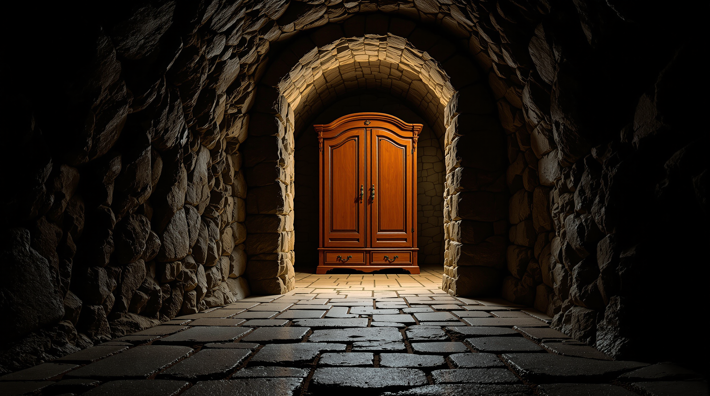
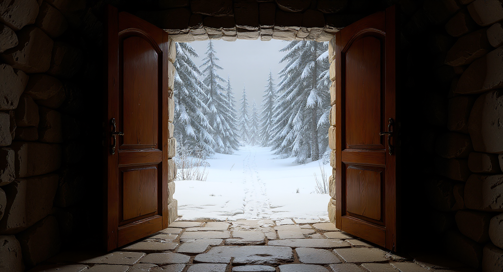
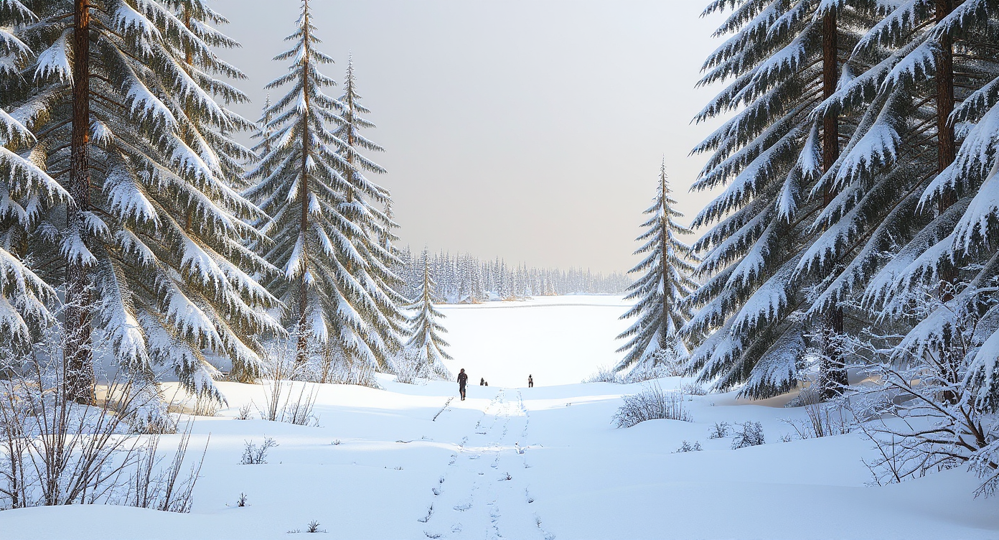
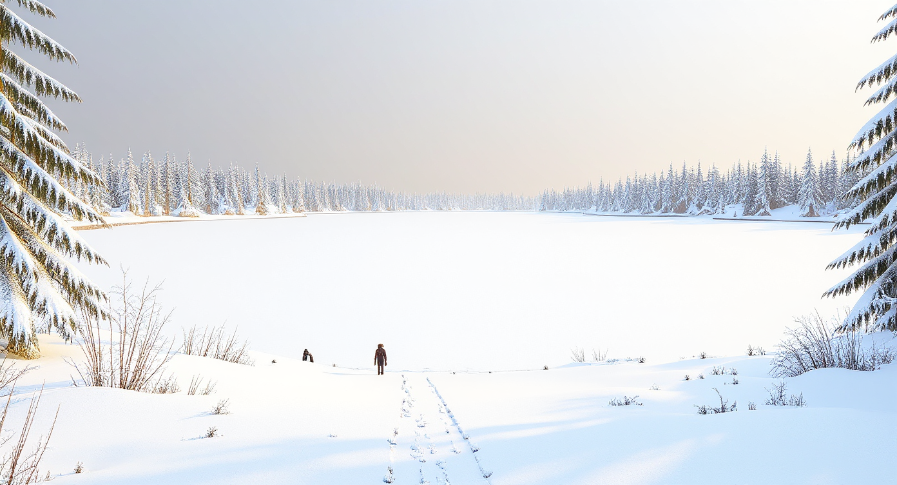

This chapter records Construct injecting the following beat's visual description as far-field only. Destination N is still built from N−1's actual still plus N's plan. N+1 is prompt text, not a second source image and not an inserted intermediate. The last beat has no look-ahead. Opening A does not look ahead. Look-ahead is the Construct algorithm, not a Project-panel toggle. Camotion Phase 1 remains frozen. These stills are not shootability evidence.
B stays B. C is only visible through the opening.
A live untitled project. Sequential Derived construction, FLUX Kontext Pro. A is the wardrobe at the end of a stone tunnel. B is constructed from A with C's snowy forest as look-ahead: the camera has crossed the doors, and the next place is already visible through the threshold. C is constructed from B with D's open snow field as look-ahead: this is still the forest path, with the far clearing in haze. D is last, so Construct sends no following visual. Source still is always the previous actual; look-ahead never replaces this viewpoint or relights it to match the next one.
A

A — Opening still. Story / upload. No look-ahead. upload-4f37599310c13cadb3bf66ded4e755b3
B

B — Constructed from A. Look-ahead is C's forest, visible through the open doors. upload-883985537b73a5d9e3621eac25d23f6f
C

C — Constructed from B. Look-ahead is D's open field, held in the far haze. upload-9edd1f13d8e7fe9217b489f205f63f2f
D

D — Last beat. No look-ahead. upload-cf88a61a3a2db77093c403476663e393
Prompt order
FULL FOLLOWING VISUAL
Construct names this destination first, then preserves the source world, then moves the camera, then attaches the following visual in full. It does not clip that visual. The following beat's intent is omitted. The last sentence of the look-ahead block forbids advancing, replacing, or relighting this place to match the next one.
Create this destination viewpoint:
<this beat's visualDescription>
This viewpoint is the destination. Do not advance to the following destination.
Preserve the same physical world, materials, lighting character, and visual identity of the source image.
Move the camera from the source viewpoint:
<this beat's intent>
This is a spatial continuation of the same world, not a restyle and not an in-place edit of the existing composition. The camera position must change.
Look ahead only:
<following beat's full visualDescription>
Hint at this only through the far field or a visible opening if physically appropriate. Do not move the camera there, replace this place with it, or relight this place to match it.
This slice does not shoot.
Session/dev-runtime stills from 9 September 2026, not durable project persistence. Cinematographer, Camotion, and video were not the observation. Changing N+1's plan stales N until Reshoot, because look-ahead is part of N's generation signature. Do not add a look-ahead toggle.